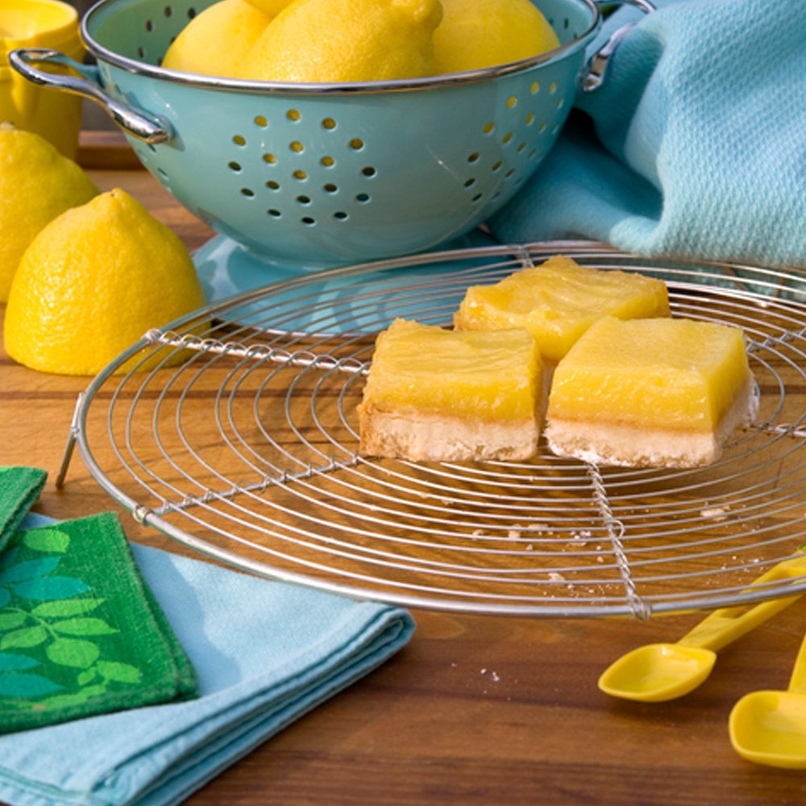

Lemon Bars

Sweet treats for a special gal
Tasty lemon bars hit the spot on a hot summer day. Bake these and put them on a tray, they won't last long. Even the crumbs are delicious. Some might even want to lick the plate!
Ingredients
Shortbread Crust
- 1 cup Gluten-Free Bake Mix 2, OR Keto Bake Mix
- 1 cup almond flour
- 1/2 cup butter, melted
- Liquid sweetener to equal 1/2 cup sugar
- 1/4 tsp almond extract
Lemon Filling
- 6 large eggs
- Liquid sweetener to equal 1 cup sugar
- 1/2 cup powdered sweetener
- 1/2 cup Gluten-Free Bake Mix 2, OR Keto Bake Mix
- 1/2 cup fresh lemon juice
- 2 tbsp lemon zest, finely chopped
Steps
Prehead oven to 350 degrees
Shortbread Crust
- In medium bowl, combine Gluten-Free Bake Mix 2, and almond flour.
- In small bowl, combine melted butter, liquid sweetener, and almond extract.
- Add to dry ingredients and mix well.
- Press into a 8 x 11-inch dish or a 9 x 9-inch dish.
- Bake 10 minutes.
- Set aside to cool.
Lemon Filling
- In mixer with whipping assembly, whip eggs together with liquid sweetener.
- Add powdered sweetener and lemon juice; whip.
- Add bake mix, OR alternative, and lemon zest and whip just until nicely combined.
- Pour lemon curd over crust.
- Bake 15 to 20 minutes until softly set.
- Let cool completely and dust with powdered sweetener, if desired.